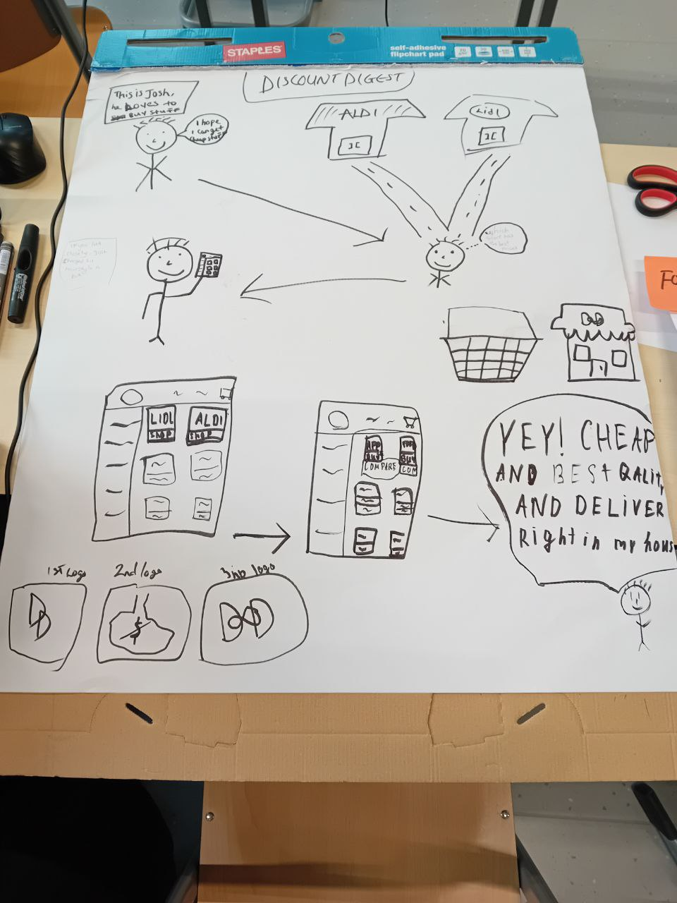
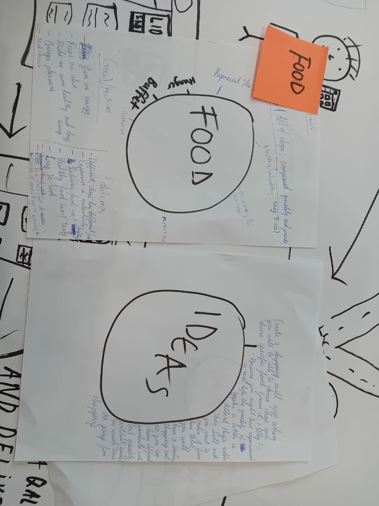
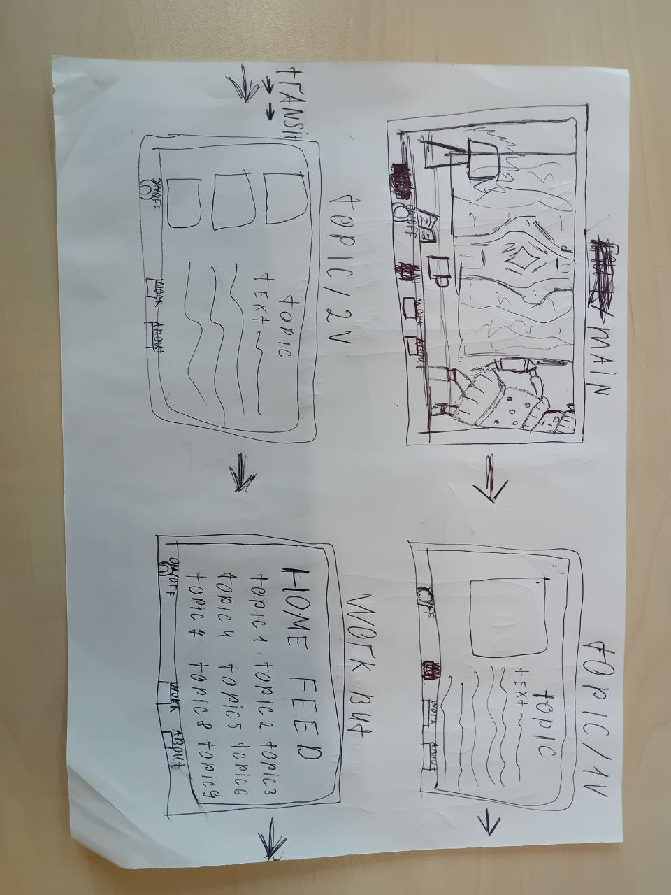
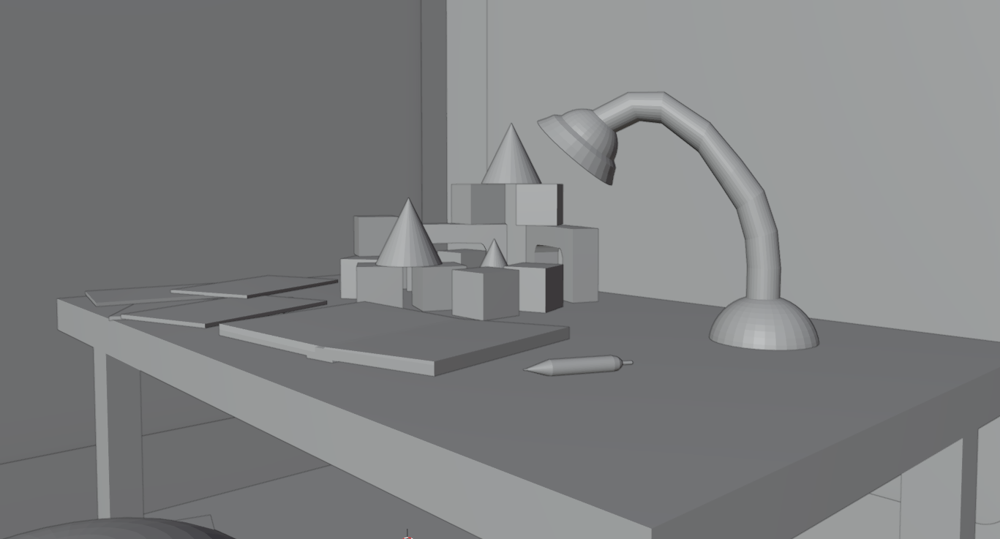
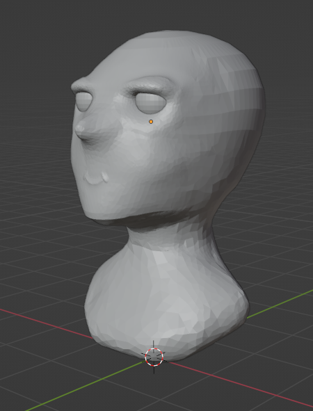
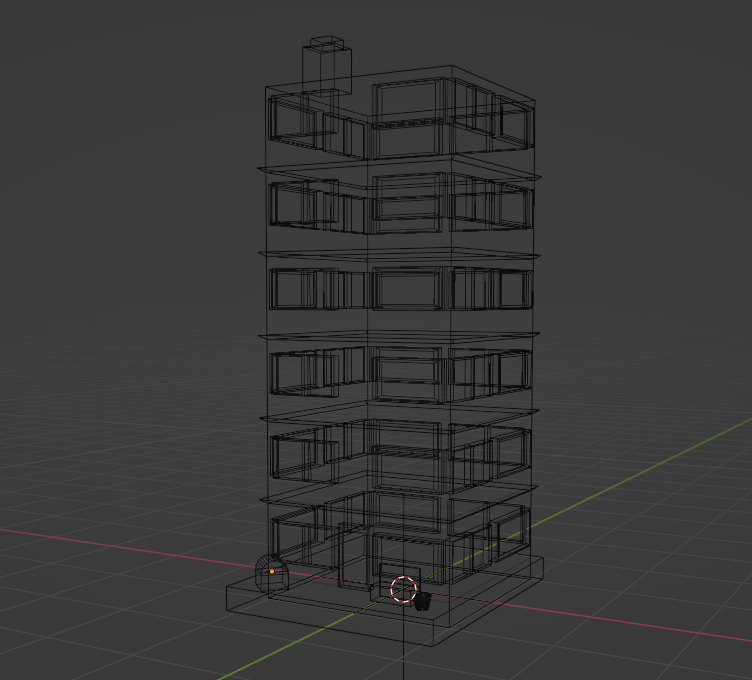
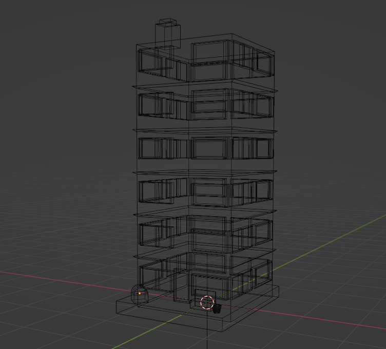
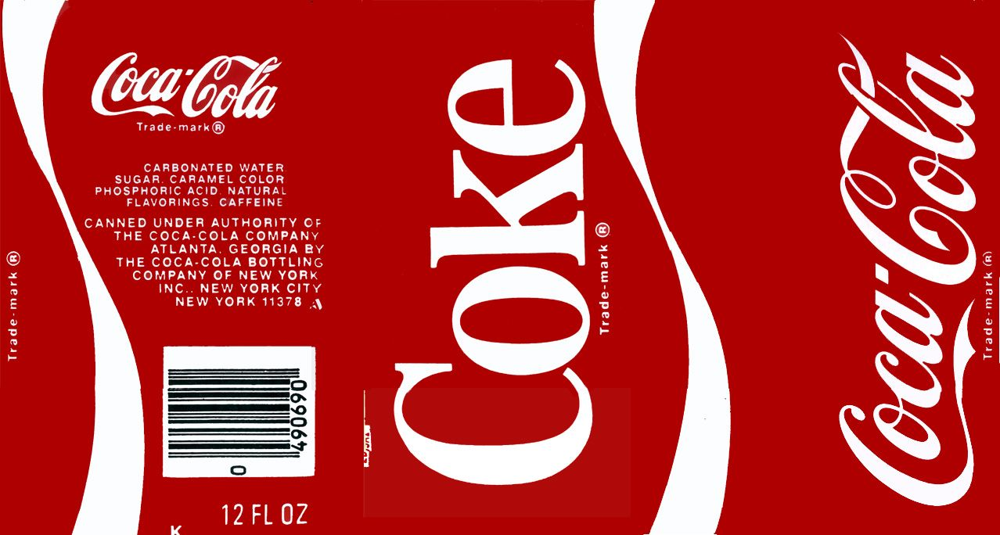
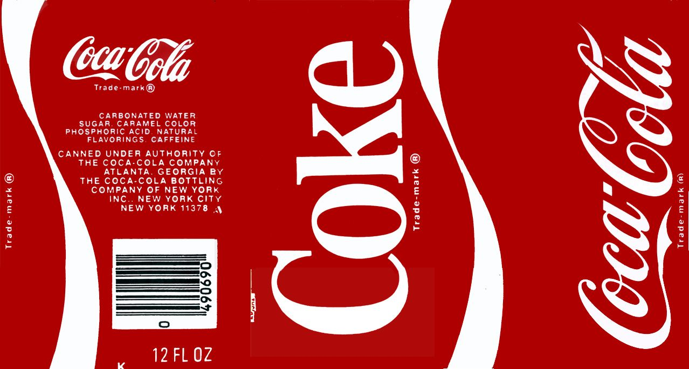

Brand Idea on
Food
During one of the Lectures we had to split up in groups and create an idea for Brand. We got Food as our topic on brand. We started with brainstorming what and how we
can do it and then I've got an idea for creating an online shopping mall for shops. After we draw it and finalised I went in front of class to present for other
students and teachers. Whilst I presented there was feedback regarding the idea I came up with. The idea was to make stores compete between each other since they
would have the rating system for their products for customers to choose the best products from different shops, but, students noted that it would be unprofitable
for stores to join and compete. Good note, the solution for it can be to start the app without big stores but smaller one, make them compete, make it so that people
will start using our mobile app because of it comfortability for them, instead of going to the stores, saving a lot of time for them. Seeing all that big companies
can risk of getting big competition from smaller stores once they start growing and, in doing so, our app will force bigger companies to join as well. This task
relates to Learning Outcome 5, because I was presenting it in front of whole class and debating on the solution with students, which as I explained in previous
assignment is a big achievement for me since I am not a fun of being a main attention of a crowd.


Personal Low-Fid
Prototype
In my future iterrations I promised to create a website for my Portfolio. To start, I decided to create a low-fidelity Prototype to understand how it will look like with
placements and design, in general. I decided to make my Portfolio website in old TV style because it is a big nostalgia for me when I was watching old cartoons on an old back
at home, so, I decided that it would be nice to make my Portfolio in that style since it is also a very appealing style to me. I also asked for feedback on it and received a
very positive feedback saying that it is a huge improvement from the one that I had in Previous Semester, also, for the mobile version I removed 3d part as stated in feedback as
well as for the back-up version decided to use Wix, web service that I used for first Portfolio itteration. This prototype relates to LO1, because I created a design that is connected to
my childhood and to me as a person, it also relates because I created it while keeping in mind that it should be easy to navigate and be able to go to the main content of website in a
few clicks. It also relates to LO3, because I asked for feedback about it and changed the Mobile version accordingly. And the last Ouctome it relates to is LO5, because for my personal growth
as a website developer and designer I created a website portfolio prototype with design that is in line with my core values. Here is the link to feedback I got: Personal Low-Fid Portfolio Design.

Blender Main
Screen
As I said before, I would like to create a nice 3d for my website that would represent me and add more atmosphere to my Portfolio. Since I am going for old childhood vibe I
decided that it would be the most suiting to create a scene where you would be able to see the darkend room with old carpets on the wall, old table and toys that I used to have
and play when I was a kid. Since for now we had only one lecture on how to work with Blender modeling I created this scene only without any textures or colors, because I've never
really worked with them. Once we have more lectures on it i am planning to improve it and add textures with colors and lights. I also want to sculpt a model of a doll that will be
sitting in the corner of the table but I will need a lecture on sculping for it, just like for the textures. This part of my Portfolio relates to LO5, because I am describing my plans
on how I want to finish this part and how I want to improve in the field of 3d. Here is also a link to GitHub file: GitHub Blender Main Screen.

Doll for
Main Page
As part of my Portfolio idea to implement what I like and who I am inside of my Portfolio I wanted to make some toys that I had when I was a child and to make a doll was
one of my main priorities to showcase the childhood I had. Even though we had a lecture on how to sculpt different models and characters very ricently and couldn't finish the entire doll
for this time I still have started with sculpting it's main features of the face she will. It might not look too pretty just yet, but I really want to improve it in my future itterations
so in the end the result must look better then it is right now :) This part relates to LO5 because knowing how to make proper 3d models is a big part in whom I want to become in the future.
Personal Growth
for Fourth
Itteration
From previous itteration I wanted to implement more of 3d into the main page, but, as I said before since we had lecture too recently I couldn't implement the full doll I wanted but I will
definetly do that for the next itteration. I also said previously that I want to implement scrolling to the side, but as the teacher said during previous Portfolio talk they should be able to
read the entire Portfolio in 20 minutes which will be annoying to scroll to the side in order to find the exact inforamtion you are looking, so, I took into consideration the suggestion of
teacher to split my Portfolio into sections for easier navigation and review and I am going to leave the idea of side scroll for when I will want to showcase my work wjile applyng for the job.
Also, I decided to not implement VHS effect to the TV because it might be irritative to read. Instead, I implemented a feature for easier reading session to turn off the background GIF when
pressed On/Off button. For the next itteration as I said I want to focus more on 3d and make the scene that will actually tell the atmosphere of the past that I had.


 

 
